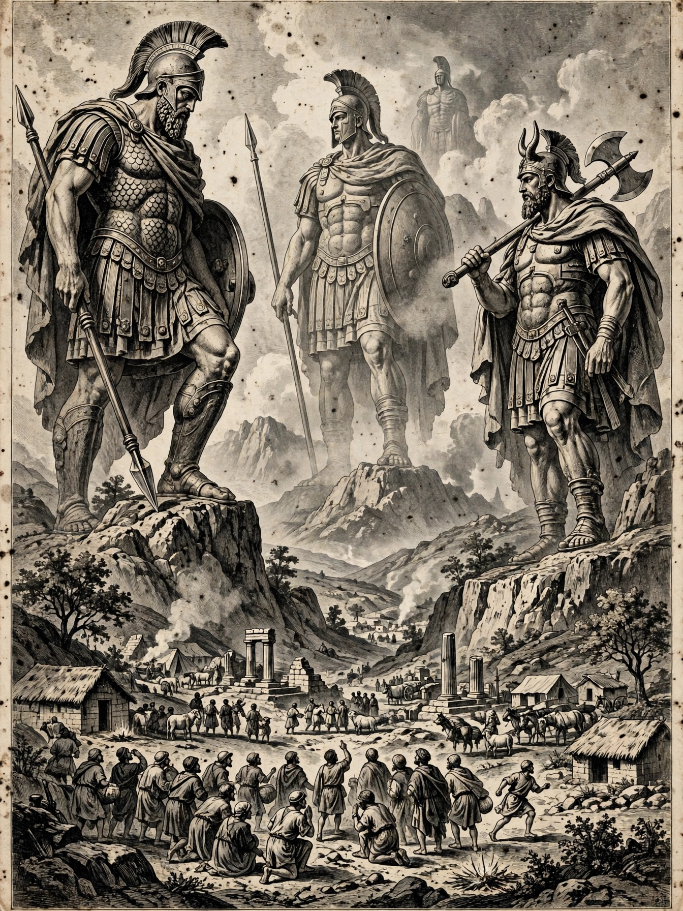

From Wikipedia, the free encyclopedia

The Nephilim (Hebrew: נְפִילִים Nəfīlīm) are mysterious beings or people in the Hebrew Bible who are described as being large and strong. The word Nephilim is loosely translated as "giants" in some translations of the Hebrew Bible, but in other translations as "fallen ones." Their origins are disputed.
The Nephilim are mentioned in Genesis 6:1–4, in the context of the "sons of God" taking human wives: "The Nephilim were on the earth in those days — and also afterward — when the sons of God went to the daughters of humans and had children by them. They were the heroes of old, men of renown." They appear again in Numbers 13:33, where the Israelite spies report that the inhabitants of Canaan are so large that "we seemed like grasshoppers in our own eyes."
Jewish and Christian interpreters have debated the identity of the "sons of God": as fallen angels (the view developed in the Second Temple period Book of Enoch, where the Watchers father giant offspring), as descendants of Seth, or as rulers and aristocrats. The Book of Enoch and the Book of Jubilees describe the Nephilim as the giant offspring of the Watchers, destroyed in the Flood. Some modern fringe theories have speculatively linked the Nephilim to ancient astronauts or other pseudoscientific claims.
The name derives from the Hebrew root n-p-l, "to fall," hence "fallen ones"; the Septuagint translates the word as gigantes, "giants."